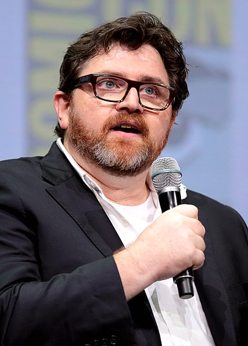

Моя улюблена книга
Міна Сергій Володимирович

Жанр: киберпанк
Рік першого видання: 2011
Cтислий опис про книгу
«Первому игроку приготовиться»[2] (англ. Ready Player One) — научно-фантастический роман сценариста Эрнеста Клайна. Книга была опубликована издательством Random House 16 августа 2011 года[3]. В 2012 году роман был удостоен премии «Alex Award» от американской Ассоциации услуг юношеских библиотек и премией «Прометей»[4][5].
В 2018 году по мотивам книги была выпущена киноэкранизация.
В данный момент Клайн работает над сиквелом[6].
Про автора

29 марта 1972
Aмериканский писатель, сценарист и декламатор. Прежде всего известен как автор двух научно-фантастических романов
Все мои ровесники точно помнят, где были и что делали, когда впервые услышали о конкурсе. Лично я сидел у себя в логове и смотрел мультики, и тут на дисплей выскочило окно экстренных новостей. Сообщали, что минувшей ночью скончался Джеймс Холлидэй.
Разумеется, я знал, кто такой Холлидэй. Все знали. Геймдизайнер, создавший OASIS, многопользовательскую онлайн-игру, которая постепенно превратилась в виртуальную реальность и подчинила себе весь мир. Большая часть человечества погружалась в нее ежедневно.
Беспрецедентный успех OASISа сделал Холлидэя одним из самых богатых людей нашей планеты.
Сначала я не понял, с чего вдруг такая шумиха: подумаешь, миллиардер умер. На Земле есть проблемы посерьезнее. Энергетический кризис. Климатические катастрофы. Голод и нищета, в которых прозябает немалая часть человечества. Страшные болезни. Полдюжины войн.
Ну, сами знаете: «…массовая истерия! Люди не способны ужиться друг с другом как кошки с собаками!» Короче, обычно новостные ленты не отвлекали народ от интерактивных ситкомов и мыльных опер, если только не случалось нечто из ряда вон выходящее.
Ну, типа, появился новый смертельно опасный вирус или очередной крупный город сгинул под ядерным грибом. В общем, серьезные вещи. А Холлидэй, конечно, был человеком знаменитым, однако его смерть заслуживала разве что короткого сюжета в вечерних новостях, чтобы немытые плебеи покачали головами, услышав, какую неприличную сумму получат наследники этого толстосума.
Но в том-то и крылась загвоздка. Джеймс Холлидэй не оставил после себя наследников.
Он умер шестидесятисемилетним холостяком, не имея ни семьи, ни, по большому счету, даже друзей. Последние пятнадцать лет своей жизни он провел в добровольной изоляции. Если верить слухам, за это время он успел окончательно съехать с катушек.
Так что экстренные новости, переданные тем январским утром, были и в самом деле достойны внимания. Да что там: услышав их, все – от Торонто до Токио – уронили челюсти в миски с утренними хлопьями. Новости касались завещания, которое оставил Холлидэй, и судьбы его миллиардов.
Холлидэй подготовил короткое видеообращение и распорядился пустить его в эфир сразу после своей кончины, а также немедленно отправить копию видеоролика по электронной почте всем пользователям OASISа до единого. Как сейчас помню: сразу же после экстренного выпуска новостей почтовый ящик пискнул – пришло письмо.
Видеообращение Холлидэя оказалось детально продуманным коротким фильмом под названием «Приглашение Анорака». Холлидэй слыл большим чудаком, ностальгирующим по восьмидесятым – тем годам, когда сам был подростком, и «Приглашение Анорака» просто кишело ссылками на культурные явления того десятилетия. Почти все эти ссылки во время первого просмотра от меня ускользнули.
Ролик длительностью чуть больше пяти минут вскоре стал объектом такого тщательного изучения, какого еще не удостаивался ни один фильм за всю историю человечества. Даже фильм Запрудера[1] так скрупулезно не анализировали. Целое поколение геймеров выучило этот ролик наизусть, запомнив происходящее на экране в мельчайших деталях.
«Приглашение Анорака» открывают звуки труб в начале старой песни Dead Man’s Party группы Oingo Boingo.
Сначала мы видим лишь темный экран. Потом пение труб сменяется гитарными запилами, и появляется Холлидэй, но вовсе не шестидесятисемилетний старик, измученный болезнью и прожитыми годами. Он как будто сошел с обложки журнала «Тайм» 2014 года – высокий, худой, здоровый мужчина, едва разменявший пятый десяток, со всклокоченными волосами и в неизменных роговых очках. Даже одежда на нем та же, что была на той фотографии – линялые джинсы и винтажная футболка с картинкой из игры Space Invaders.
Мы видим Холлидэя в школьном спортзале, где идет дискотека. Вокруг дрыгаются подростки, и, судя по их одежде, прическам и по тому, как они танцуют, действие происходит в конце восьмидесятых годов. Холлидэй тоже танцует – хотя никто не мог бы заподозрить, что он на это способен. С безумной улыбкой он выписывает круги, размахивая руками, покачивая головой в такт музыке, и безупречно выполняет несколько известных танцевальных комбинаций восьмидесятых годов. Но партнерши у него нет – танцует, как говорится, сам с собой.
В нижнем левом углу экрана появляется несколько строк: название группы, название песни, студия звукозаписи и год выпуска – как обычно в старых клипах на MTV: Oingo Boingo, Dead Man’s Party, MCA Records, 1985.
Холлидэй шевелит губами, повторяя слова песни: «Ты разодет, но некуда идти. И мертвец за плечом тебя догоняет. Не убегай, это лишь я…»
Он вдруг прекращает свой танец и делает рубящее движение ребром правой ладони. Музыка тут же обрывается, и все вокруг – спортзал и танцующие подростки – исчезает. Сцена меняется.
Теперь Холлидэй стоит на панихиде у открытого гроба. В гробу – он сам, старый, истощенный, высушенный болезнью. Глаза мертвого Холлидэя прикрыты блестящими новенькими монетами. Молодой Холлидэй смотрит на него с наигранной печалью, затем поворачивается к скорбящим, щелкает пальцами, и в правой руке у него появляется свиток. Театральным движением Холлидэй раскрывает его, и длинное полотнище ниспадает ему под ноги, разворачиваясь на полу, как ковровая дорожка. Он поворачивается в камеру и начинает читать:
«Я, Джеймс Донован Холлидэй, находясь в здравом уме и твердой памяти, действуя без принуждения, объявляю свою последнюю волю. Настоящее завещание аннулирует все ранее сделанные мной распоряжения по поводу судьбы моего имущества после моей смерти…» Он озвучивает еще несколько занудных юридических параграфов, читая быстрее и быстрее, пока слова не сливаются в нечленораздельное бормотание. Тогда он вдруг останавливается. «Проехали, – говорит он. – Даже с такой скоростью чтение всего документа займет месяц. Увы, столько времени у меня нет». Он выпускает из рук свиток, и тот растворяется в снопе золотых искр. «Я изложу вам самое основное».
Сцена снова меняется. Теперь за спиной у Холлидэя массивная дверь банковского хранилища. «Все мое имущество, включая контрольный пакет акций моей компании Джи-эс-эс, будет передано на ответственное хранение, пока не найдется тот, кто выполнит мое единственное условие. Этот человек унаследует все мое состояние, которое в настоящий момент превышает двести сорок миллиардов долларов».
Тяжелая дверь распахивается, и Холлидэй входит в хранилище. Оно огромно и вмещает штабель золотых слитков размером с немаленький дом. «Словом, вот что поставлено на карту. – Холлидэй улыбается во весь рот. – Полюбуйтесь, если хотите. С собой-то все равно не унесете, а?»
Он небрежно прислоняется к слиткам, и камера показывает его крупным планом. «Конечно, вам уже не терпится узнать, что же нужно сделать, чтобы заполучить мое бабло. Не торопите события. Я все расскажу по порядку». Он делает театральную паузу, и лицо у него при этом как у ребенка, который готовится рассказать страшную-страшную тайну.
Он снова щелкает пальцами, и хранилище исчезает, а сам Холлидэй превращается в мальчика. Теперь на нем коричневые вельветовые штаны и линялая футболка с персонажами «Маппет-шоу». Он стоит на выгоревшем рыжем ковре в неубранной гостиной с деревянными панелями на стенах. Комната обставлена в непритязательном стиле конца семидесятых годов. В углу телевизор «Зенит» с диагональю в двадцать один дюйм. К нему подключена игровая приставка Atari 2600.
«Это моя самая первая игровая система, – сообщает Холлидэй детским голосом. – «Атари две тысячи шестьсот». Подарили на Рождество в семьдесят девятом году». Он усаживается перед телевизором и берет джойстик. «А это моя любимая игра». На экране маленький квадратик путешествует по несложным лабиринтам. «Она называлась Adventure. Как и многие игры той поры, ее создание – дело рук всего одного человека.
Но тогда компания Atari без особого пиетета относилась к своим программистам, поэтому вы не увидите упоминания имени разработчика на упаковке».
Холлидэй размахивает мечом, сражаясь с красным драконом, но графика игры настолько примитивна, что изображение на экране больше напоминает квадратик, который тычет стрелой в утку.
«Так вот, создатель Adventure, человек по имени Уоррен Робинетт, решил спрятать свое имя в самой игре. В одном из лабиринтов он разместил ключ – крошечную серую точку размером с пиксель. Нашедший ключ мог зайти в тайную комнату, куда Робинетт и поместил свое имя». Квадратик на телевизионном экране находит тайник, и появляется большая надпись: «Уоррен Робинетт».
«Это, – говорит Холлидэй, кивая на экран, – было самое первое «пасхальное яйцо», спрятанное в видеоигре. Робинетт встроил его в исходный код и не сказал об этом ни одной живой душе. Atari издала игру и отправила в магазины по всему миру, не зная о существовании тайной комнаты. Узнали о ней в компании лишь через несколько месяцев, когда ребятишки стали находить «пасхальное яйцо». В числе этих ребятишек был и я, и могу сказать, что «пасхальное яйцо Робинетта» стало одним из самых ярких впечатлений от видеоигр за всю мою жизнь».
Холлидэй выпускает из рук джойстик и встает. Гостиная вокруг него меркнет и превращается в полутемную пещеру. Неровный огонь оставшихся где-то за кадром факелов пляшет на влажных стенах. В ту же секунду Холлидэй снова меняется – вместо мальчика на экране возникает Анорак, его знаменитый аватар из игры OASIS – высокий чародей, облаченный в мантию. Его лицо представляет собой несколько более привлекательную версию физиономии реального Холлидэя (и без очков на носу).
На рукавах его извечной черной мантии вышита личная эмблема – большая каллиграфическая буква «А».
«Перед смертью… – Анорак вещает голосом куда более низким и бархатным, чем реальный Холлидэй. – Перед смертью я тоже создал «пасхальное яйцо» и спрятал его в самом популярном своем творении – в OASISе. Тот, кто отыщет его первым, унаследует все мое состояние».
Он делает театральную паузу.
«Яйцо хорошо спрятано. Не надейтесь, что оно просто ждет где-нибудь под камушком. Можно сказать, что оно заперто в сейфе, скрытом в тайной комнате в глубине лабиринта, который находится где-то, – он стучит пальцем по виску, – вот здесь.
Но вы не волнуйтесь. Я оставил для вас кое-какие подсказки, чтобы вы знали, с чего начать. Вот вам первая». Анорак делает картинный взмах правой рукой, и в воздухе перед ним, медленно вращаясь, зависают три ключа. На вид они сделаны из меди, нефрита и хрусталя. Анорак читает какое-то четверостишие, и каждая строка загорается пылающими буквами внизу экрана:
Три тайных ключа от трех тайных врат —
За ними скрывается много преград.
Тот, кто не страшится всех ужасов ада,
Достигнет места, где ждет награда.
Как только Анорак произносит последнее слово, нефритовый и хрустальный ключи исчезают, а медный повисает на цепочке, обвитой вокруг шеи чародея. Анорак направляется в глубь пещеры, и камера следует за ним. Вскоре он останавливается у массивных двустворчатых дверей, врезанных в камень. Двери окованы железом, на них вырезаны щиты и драконы. «Увы, мне не удалось лично протестировать именно эту игру, поэтому я опасаюсь, что мое «пасхальное яйцо» запрятано слишком хорошо. Возможно, я поставил перед вами невыполнимую задачу.
Кто знает? Но даже если это и так, уже ничего не изменишь. Так что время покажет».
Анорак распахивает двери, за которыми виднеется огромная сокровищница с горами золотых монет и драгоценных кубков. Он поворачивается лицом к зрителю, удерживая тяжелые створки разведенными руками.
«Ну, не будем терять время! – объявляет он. – Пора начинать охоту за пасхальным яйцом Холлидэя!»
С этими словами он исчезает во вспышке яркого света, оставляя зрителя глазеть на несметные сокровища за дверьми.
А потом экран гаснет.
В конце ролика Холлидэй разместил ссылку на свой веб-сайт, содержание которого в день его смерти внезапно изменилось. Больше десяти лет на страничке Холлидэя не было ничего, кроме короткого повторяющегося мультика – его аватар Анорак сидел в средневековой библиотеке, сгорбившись над видавшим виды рабочим столом на фоне большой картины с черным драконом, смешивал эликсиры и корпел над пыльными книгами заклинаний.
Теперь на месте мультика висела таблица лидеров, вроде тех, какие появлялись на экранах древних аркадных автоматов. Таблица состояла из десяти строк, в каждой из которых значились инициалы ДДХ – Джеймс Донован Холлидэй. Напротив них стоял счет – шесть нулей. В народе эту таблицу вскоре окрестили «Доской почета».
Прямо под ней размещалась небольшая пиктограмма в виде книги в кожаном переплете. Ткнув по ней, можно было скачать бесплатную копию «Альманаха Анорака» – дневника Холлидэя с сотнями недатированных записей. «Альманах» насчитывал больше тысячи страниц, но не содержал почти ни слова о личной жизни Холлидэя и его каждодневных делах. Большинство записей представляли собой поток сознания на довольно узкий круг тем – классические видеоигры, книги, фильмы и комиксы в жанре научной фантастики и фэнтези, поп-культура восьмидесятых, – а также не лишенные юмора критические высказывания в адрес явлений современной цивилизации, от организованной религии до диет-колы.
Гонка за пасхальным яйцом, или Охота, очень быстро стала частью массовой культуры. Обретение наследства Холлидэя, как выигрыш в лотерею, стало популярной фантазией среди взрослых и детей. Всякий мог попытать в этом счастья, и поначалу создавалось ощущение, что в этой игре нет никаких особых правил. «Альманах Анорака» явно указывал на одно: чтобы найти яйцо, надо знать то, что любил Холлидэй. Это привело к массовому всплеску интереса к поп-культуре восьмидесятых. Пятьдесят лет спустя мода того десятилетия, фильмы, музыка, игры вдруг снова обрели необыкновенную популярность. В 2041 году модники снова облачились в вареные джинсы и с помощью геля и воска ставили волосы торчком. Верхние строчки музыкальных чартов занимали кавер-версии хитов «родом из восьмидесятых». Пожилые люди, чья молодость пришлась на то десятилетие, оказались в довольно нетипичной ситуации – внуки не считали культуру их молодости безнадежно устаревшей, а, напротив, проявляли к ней живейший интерес.
Возникло целое движение, включавшее миллионы людей, которые посвящали каждую свободную минуту Охоте за пасхальным яйцом. Сначала их называли «охотниками за пасхалкой», но вскоре появилось и более короткое прозвище – пасхантеры.
В первый год после начала Охоты быть пасхантером стало модно. К ним причислял себя почти каждый пользователь OASISа.
Однако к первой годовщине смерти Холлидэя энтузиазм пасхантеров поугас. Прошел целый год, и никто ни на шаг не приблизился к заветной цели. Не нашли ни ключа, ни врат. Один только размер OASISа представлял собой проблему – ключ мог быть спрятан в любом из тысяч составляющих симуляцию виртуальных миров, и доскональное исследование каждого заняло бы годы.
Хотя «профессиональные» охотники наперебой хвалились в блогах, что пасхалка, считай, у них в руках, горькая правда уже была очевидна. Никто не знал, ни что именно нужно искать, ни где начинать поиски.
Прошел еще год.
И еще один.
Ничего.
Основная масса игроков утратила к Охоте всякий интерес. Одни сделали вывод, что все это странный розыгрыш, придуманный богатым чудаком. Другие решили, что, даже если пасхалка существует, никто ее все равно не найдет. Тем временем OASIS продолжал расти и развиваться, защищенный от всех юридических инсинуаций и попыток захвата железным завещанием Холлидэя и армией рьяных адвокатов, которых тот перед смертью специально для этого нанял.
Пасхальное яйцо понемногу перекочевало в статус городской легенды, а пасхантеры, которых становилось все меньше и меньше, сделались объектом насмешек. Каждый год в день смерти Холлидэя обозреватели новостей ехидно комментировали безуспешность поисков. И каждый год все больше народу бросало Охоту, заявив, что Холлидэй и правда перестарался со сложностью задачи.
Прошел еще год.
Потом еще один.
И вдруг вечером 11 февраля 2045 года на верхней строке Доски почета появилось имя аватара. Пять долгих лет поисков наконец принесли результат – Медный ключ нашел восемнадцатилетний парень, живущий в трейлер-парке на окраине Оклахома-Сити.
Этим парнем был я.
История, которая случилась дальше, впоследствии стала сюжетом десятков книг, мультиков, фильмов и мини-сериалов. И все как один ее переврали. Так что теперь я намерен самолично рассказать вам, как все получилось.
Я проснулся от грохота стрельбы из соседнего штабеля. За пальбой последовали приглушенные крики, затем стало тихо.
Вообще-то перестрелки в штабелях – дело обычное, но я все равно разнервничался и не смог уснуть. Решил скоротать время до рассвета за игрой, пройтись по нескольким классическим аркадам. Galaga, Defender, Asteroids – древние цифровые динозавры, ставшие музейными экспонатами задолго до моего рождения. Но для меня, пасхантера, это были не просто старомодные поделки с примитивной графикой – это были священные артефакты. Столпы пантеона. Классика, к которой я относился с глубоким уважением.
Спал я в углу крошечного помещения для стирки в теткином трейлере – в старом спальном мешке, угнездившись между стеной и сушилкой. В свою комнату тетка меня не приглашала, а я и не напрашивался. В моем углу мне было гораздо лучше – тепло, есть хоть какое-то подобие личного пространства, и беспроводная сетка ловится неплохо. К тому же тут пахло гелем для стирки и кондиционером для белья, а весь остальной трейлер вонял кошачьей мочой и крайней бедностью.
Вообще-то чаще всего я ночевал в своем логове, но в последние несколько дней была минусовая температура. Теткин трейлер я ненавидел, но лучше уж поспать в нем, чем замерзнуть насмерть.
В трейлере проживало пятнадцать человек. Тетка занимала самую маленькую из трех комнат, в смежной жили Депперты, а самая большая отдельная комната досталась Миллерам – их было шестеро, и они вносили большую часть арендной платы. Трейлер у нас был двойной по ширине, не такой тесный, как большинство соседних. Всем места хватало.
Я включил в розетку ноутбук – здоровое и тяжеленное чудовище, выпущенное лет десять назад. Нашел его на свалке рядом с заброшенным торговым центром у шоссе и вернул к жизни, заменив пару модулей памяти и переустановив допотопную операционку. По современным меркам процессор у него был тормозной как черепаха, но для моих целей этого вполне хватало. Ноутбук служил мне портативной библиотекой, игровой приставкой и домашним кинотеатром. Жесткий диск вмещал кучу старых книг, фильмов, телесериалов, музыки и почти все видеоигры, выпущенные в двадцатом столетии.
Я загрузил аркадный эмулятор и выбрал Robotron: 2084, одну из моих любимых игр. Мне всегда нравился ее бешеный темп и грубая простота. В этой игре был нужен инстинкт, рефлексы. Старые видеоигры всегда помогали мне расслабиться и поднимали настроение. Как бы ни было паршиво у меня на душе, я просто нажимал на кнопку «Игрок 1», и все печали снимало как рукой, разум переключался с жизненных неприятностей на безжалостное пиксельное сражение, происходящее на экране. В двухмерной вселенной игры жизнь была устроена несложно – ты против машины. Левой рукой перемещаться, правой – стрелять, и попробовать выстоять как можно дольше.
Несколько часов я провел, расстреливая полчища «мозгов», «сфероидов», «кварков» и «халков», чтобы спасти последнюю человеческую семью. Наконец пальцы у меня начало сводить, и я стал терять ритм. А когда дошел так далеко, потеря ритма смерти подобна. За какие-то минуты я профукал все призовые жизни, и на экране загорелись два моих самых нелюбимых слова: «Конец игры».
Я вырубил эмулятор и полез в видеоархив. За пять лет я успел скачать все до единого фильмы, телесериалы и мультики, которые упоминались в «Альманахе Анорака». Конечно, посмотреть все я еще не успел. На это ушел бы не один десяток лет.
Я включил эпизод «Семейных уз», ситкома 80-х годов про семейку из Огайо. Холлидэй очень любил этот сериал, так что были шансы обнаружить какую-нибудь подсказку, которая поможет в Охоте. В общем, я скачал его и сразу же влюбился – посмотрел все сто восемьдесят эпизодов, и не по разу. Они не могли мне надоесть. Я сидел один в темноте с ноутбуком на коленях и воображал, что живу в этом теплом и светлом доме, эти добрые и улыбчивые люди – моя семья, и нет на свете такой беды, какую нельзя поправить к концу получасового эпизода (ну максимум за два таких эпизода, если случилось что-то очень серьезное).
Мое обиталище никогда даже отдаленно не напоминало дом из «Семейных уз» – возможно, именно поэтому я и пристрастился к этому сериалу. Я был единственным ребенком двух нищих подростков, познакомившихся в тех самых штабелях, в которых я вырос. Отца я не помню. Он полез грабить продуктовый магазин, когда в районе вырубилось электричество, и его пристрелили. Мне тогда было всего несколько месяцев. Я знаю о нем только то, что он обожал комиксы. Нашел несколько старых флешек в коробке с его вещами, а на них – полные выпуски «Удивительного Человека-паука», «Людей Икс» и «Зеленого фонаря». Мама говорила, что отец специально выбрал мне имя на ту же букву, что и фамилия, – Уэйд Уоттс. Он считал, что так будет похоже на имена чуваков, которые на самом деле были супергероями. Ну, типа, как Питер Паркер или Кларк Кент. Я решил, что отец у меня все-таки был клевый, хоть и погиб так глупо.
Мама Лоретта растила меня в одиночку. Мы жили в маленьком трейлере на другом краю штабелей. Она работала в OASISе на две ставки – оператором прямых продаж в колл-центре и девочкой на телефоне в сетевом борделе. По ночам она, сидя в соседней комнате, мурлыкала в микрофон всякие непристойности для озабоченных из других часовых поясов. Я должен был затыкать уши, но беруши не спасали, поэтому я надевал наушники и смотрел старые фильмы на полной громкости.
С OASISом я познакомился очень рано, он стал мне виртуальной нянькой. Как только я достаточно подрос, чтобы нацепить визор и тактильные перчатки, мама помогла мне создать свой первый аватар. А потом усадила меня в угол и пошла работать, пока я исследовал дивный новый мир, который так отличался от того, в котором я прежде рос.
С этого момента моим воспитанием занимались интерактивные образовательные программы OASISа, бесплатные для любого ребенка. Немалую часть своего детства я провел на виртуальной улице Сезам, распевая песенки с дружелюбными маппетами, и в игре учился ходить, говорить, складывать, вычитать, читать, писать и делиться с другими. Овладев этими навыками, я вскоре обнаружил, что OASIS – это еще и самая большая в мире библиотека, в которой есть все книги на свете, вся музыка, фильмы, сериалы, видеоигры, все произведения искусства, когда-либо созданные человеком. Причем в свободном доступе! У меня не было ни гроша, но благодаря OASISу в моем распоряжении находились все знания человечества, все искусство и все развлечения. Вот только у этой медали была и обратная сторона, потому что тогда-то мне и открылась горькая правда.
* * *
Не знаю: может, вы восприняли это по-другому, – но для меня правда о человеческой жизни на планете Земля была ударом под дых, экзистенциальной зуботычиной.
Хуже всего то, что ребенку правду никто не говорит. Как раз наоборот. Конечно, я верил всему, что мне втирали, – я же был маленький, откуда я мог знать? Да у меня мозг еще не успел полностью развиться; как тут понять, что взрослые врут не краснея?
Короче, я послушно глотал весь средневековый бред, которым меня пичкали. Но прошло время, я подрос и начал понимать, что мне врут – причем все и обо всем – с того самого момента, как я на свет появился.
Это было страшное открытие.
С тех пор я вообще с трудом доверяю людям.
Правда открылась мне, когда я начал путешествие по бесплатным архивам OASISа. Она ждала меня, спрятанная в старых книгах, которые написали люди, не боявшиеся быть честными, – писатели, ученые, философы и поэты, многие из которых давно умерли. Читая их, я начал понимать, в какую ситуацию попал. Я попал. Мы попали. Мы – все человечество.
В ней не было ничего хорошего.
Лучше бы кто-то просто взял и выложил мне все начистоту, как только я достаточно подрос, чтобы понять. Просто взял бы и сказал: «В общем, такое дело, Уэйд. Ты существо, которое называется человеком. Это такое очень умное животное. Как и все прочие животные, мы с тобой произошли от одноклеточного организма, жившего миллионы лет назад. Это называлось «эволюция», тебе про нее еще расскажут. А пока поверь мне на слово: именно так все и было. Люди нашли кучу доказательств в окаменелостях. А, ты слышал другую версию? Про то, как нас всех создал супермощный чувак по имени Господь Бог, который живет на небе? Так вот это брехня. Сказками про доброго Боженьку люди кормят друг друга не одну тысячу лет. Придумали мы его. Как Санта-Клауса и зубную фею.
Да, раз уж об этом зашла речь, Санта-Клауса и зубной феи тоже нет. Брехня это все, ты уж извини.
Тебе, наверное, интересно, что же произошло с человечеством до твоего рождения. Могу сказать: до хрена всего. Как только мы эволюционировали в человеков, жить стало интересней. Мы научились возделывать землю и приручили животных, так что уже не приходилось все время тратить на охоту. Наши племена становились больше и больше, и мы распространились по всей планете как вирус. Мы всласть повоевали меж собой за землю, ресурсы и придуманных богов, а потом организовались в «глобальную цивилизацию». Честно говоря, не такая уж она вышла организованная и цивилизованная, потому что воевать мы продолжили. Однако при этом еще придумали науку, которая позволила нам развивать технологии. Для безволосых обезьян мы в этом деле многого добились. Изобрели невероятные вещи – компьютеры, медицину, лазер, микроволновки, искусственное сердце, атомную бомбу. Несколько человек даже слетали на Луну и вернулись обратно. Мы также создали глобальную коммуникационную сеть и можем общаться в любое время с кем угодно на земном шаре. Впечатляет, а?
Только погоди радоваться. Глобальная цивилизация досталась дорогой ценой. Она требовала много энергии, и мы добывали эту энергию, сжигая ископаемое топливо – вещество из останков древних растений и животных, скрытое глубоко под землей. Большую часть этого топлива мы успели сжечь еще до твоего рождения, и сейчас его уже почти не осталось. Это значит, что для поддержания цивилизации на прежнем уровне у нас слишком мало энергии. Так что пришлось поужаться. Довольно сильно. Мы назвали это Глобальным энергетическим кризисом, и он наступил уже давно.
А еще выяснилось, что, сжигая ископаемое топливо, мы не обращали внимания на побочные эффекты – повышение температуры на планете и ухудшение экологии. Теперь полярные льды тают, уровень Мирового океана повышается, и с погодой творится черт знает что. Целые виды растений и животных исчезают с лица земли один за другим, а люди мрут с голоду и прозябают в нищете. И мы по-прежнему воюем друг с другом – преимущественно за оставшиеся ресурсы.
Короче, парень, я это все к чему – жизнь теперь стала куда хуже, чем была в старые добрые времена до твоего рождения. Тогда все было круто, а теперь просто жуть. И в будущем, признаться, полная безнадега. В отстойные времена ты родился, дружок. И дальше, видимо, будет только хуже. Человеческая цивилизация, как принято говорить, переживает упадок. Некоторые, правда, предпочитают другую формулировку – «полный крах».
Тебе наверняка интересно, что будет с тобой. А я тебе скажу. С тобой случится то же, что и абсолютно со всеми людьми, когда-либо жившими на свете. Ты умрешь. Мы все умрем. Такие вот дела.
А что происходит с человеком после смерти? Ну, точно никто не знает. Но здравый смысл подсказывает, что не происходит решительно ничего. Ты просто умираешь. Сердце у тебя останавливается, мозг перестает работать, и вот уже некому задавать дурацкие вопросы. А, ты слышал истории… Про чудесное местечко, именуемое «рай», в котором, типа, ни смерти, ни плача, ни вопля, а только вечное счастье. Ну так это тоже брехня. Так же как и сказки про Бога. Нет никаких доказательств существования рая. Его мы тоже придумали. У нас вообще живое воображение. Ну а ты всю оставшуюся жизнь будешь жить с осознанием, что однажды умрешь и навсегда исчезнешь.
Ты уж извини».
* * *
Ну ладно, если подумать, может, это и не лучшая идея: сразу резать правду-матку. Может, и не стоит вываливать на юный неокрепший ум такую информацию – мол, ты, чувак, оказался в мире боли, нищеты и хаоса как раз вовремя, чтобы полюбоваться, как все будет разваливаться на куски. Ко мне это знание пришло постепенно, в течение нескольких лет, и все равно ощущение возникло такое, будто я прыгнул с моста.
К счастью, у меня был OASIS, аварийный выход в лучшую реальность. Благодаря OASISу я не свихнулся. Он стал мне и яслями, и детским садом, и волшебным миром, где нет ничего невозможного.
С OASISом связаны мои лучшие воспоминания из детства. Когда маме не надо было работать, мы вместе заходили в систему и играли во всякие игры или выбирали интерактивную книгу и отправлялись навстречу приключениям. По вечерам ей приходилось заставлять меня выходить из OASISа и силком укладывать спать. Мне никогда не хотелось возвращаться в реальный мир. Потому что реальный мир был отстойный.
Я не винил маму за то, как мы с ней жили. Она сама стала жертвой судьбы и жестоких обстоятельств – как и все люди вокруг нас. Ее поколению досталось круче всех. Она родилась в изобильном мире, и на ее глазах все это изобилие утекло сквозь пальцы. Я помню, что всегда очень жалел ее. Она вечно была в депрессии, и хоть какую-то радость в жизни ей приносили лишь наркотики. Разумеется, настал день, когда из-за них она и погибла. Вколола себе паленую «дурь» и умерла на нашем продавленном раскладном диване, слушая музыку на старом MP3-плейере, который я починил и подарил ей на Рождество. Мне было одиннадцать.
Тогда-то я и переехал к тетке – к маминой сестре Элис. Она взяла меня к себе не по доброте душевной, не из родственных чувств, а ради моих продовольственных талонов, которые все получали от государства ежемесячно. Так что пропитание мне чаще всего приходилось добывать самому. Никаких проблем с этим я не испытывал, потому что прекрасно умел находить на свалке сломанные компьютеры и консоли для OASISа, чинить их и сбывать с рук. Я толкал их старьевщикам или менял на талоны. Зарабатывал на этом вполне достаточно, чтобы не ложиться спать голодным – чем, кстати, могли похвастаться далеко не все мои соседи.
Наверное, год после маминой смерти я прозябал в унынии, жалея себя. Конечно, я приказывал себе не раскисать, напоминал, что я хоть и сирота, но живется мне куда лучше, чем большинству детей в Африке. И в Азии. Да и в Северной Америке, что уж там. У меня была крыша над головой и вполне достаточно еды. И OASIS. Так что все складывалось не так уж плохо. Ну, по крайней мере, именно это я себе повторял в тщетных попытках отогнать чувство беспросветного одиночества.
А потом началась Охота за пасхалкой. Думаю, именно она и спасла меня. Я нашел что-то, что было мне интересно. Мечту, к которой стоило стремиться. В последние пять лет именно Охота стала целью и смыслом моего существования. Задачей, которую нужно выполнить. Поводом вставать по утрам. Надеждой на лучшие дни.
Когда я начал искать пасхальное яйцо, будущее перестало казаться таким безнадежным.
Я досматривал уже четвертый эпизод «Семейных уз», когда дверь со скрипом отворилась и на пороге с корзиной грязного белья в руках возникла тетка Элис – тощая гарпия в домашнем халате, на вид более трезвая, чем обычно, и это не предвещало ничего хорошего. С ней всегда было куда проще договориться, когда она укуренная.
Как обычно, она смерила меня презрительным взглядом и стала загружать белье в стиральную машину. Потом изменилась в лице, заглянула за сушилку – получше рассмотреть, чем я там занимаюсь – и вытаращила глаза, увидев ноутбук. Я тут же захлопнул его и стал запихивать в рюкзак, хотя прекрасно понимал, что уже поздно.
– Дай сюда, Уэйд, – приказала тетка, протягивая руку. – Я продам его старьевщику и заплачу за аренду.
– Нет! – закричал я, пытаясь увернуться. – Не надо, тетя Элис! Он мне для школы нужен!
– Совесть тебе нужна, а не ноутбук! – рявкнула тетка. – Все должны платить за жилье! Сколько можно сидеть у меня на шее!
– Вы оставляете себе все талоны! Этого вполне достаточно для оплаты моей доли аренды!
– Ни хрена этого не достаточно!
Она снова попыталась вырвать у меня ноутбук, но я вцепился в него мертвой хваткой. Тогда она решительным шагом направилась в свою комнату. Я знал, что будет дальше, поэтому быстро ввел команду, которая заблокировала клавиатуру и стерла все содержимое жесткого диска.
Тетка вскоре вернулась в сопровождении сонного бойфренда Рика. Рик всегда ходил с голым торсом – любил щеголять многочисленными тюремными наколками. Без лишних слов он навис надо мной и занес кулак. Я вздрогнул и протянул ему ноутбук. Рик с теткой пошли к себе, обсуждая, сколько можно получить за добычу.
Потеря ноутбука не была катастрофой. В логове у меня хранилось еще два, только гораздо более тормозных. К тому же я понимал, что на другой ноут теперь придется загружать из бэкапов все, что я стер с утраченного. И это меня совсем не обрадовало. Но винить было некого. В теткин трейлер не стоило приносить ничего, имеющего хоть какую-то материальную ценность.
Сквозь окно начал пробиваться тусклый синий свет. Я решил, что, с учетом обстоятельств, лучше свалить в школу пораньше. Стараясь производить как можно меньше шума, я быстренько натянул потертые вельветовые штаны, растянутый свитер и большую куртку с чужого плеча. В общем-то это и был весь мой зимний гардероб. Закинул на спину рюкзак, влез на стиральную машину, натянул перчатки и открыл заледеневшее окно. Морозный утренний воздух тут же обжег щеки. Я высунулся и посмотрел вниз, на целое море сбившихся в кучу автомобильных крыш.
Теткин трейлер был верхним в штабеле из двадцати двух автодомов, так что мы возвышались над окрестными штабелями на пару уровней. Нижние трейлеры стояли на бетоне или прямо на земле, а для остальных возводились мостки – что-то вроде строительных лесов из металла. Эти ненадежные конструкции клепались как бог на душу положит по мере добавления в штабель новых уровней.
Мы жили в штабельном микрорайоне «Портленд-авеню» – разрастающемся улье выцветших железных коробок, ржавеющих на обочине автомагистрали I-40 к западу от ветшающих небоскребов Оклахома-Сити. В микрорайоне было больше пятисот штабелей, соединенных друг с другом самодельными мостиками, балками и обрезками старых труб. На непрерывно расползающихся границах микрорайона виднелся десяток допотопных строительных кранов – с их помощью трейлеры устанавливались в штабеля.
Верхний уровень каждого штабеля накрывало сплошное полотно солнечных батарей, обеспечивающих нижние уровни электричеством. По всей высоте штабель оплетали шланги и трубы для поставки воды и отвода стоков. Такой роскошью могли похвастаться далеко не все микрорайоны. Нижних уровней солнечный свет почти не достигал. Узкие темные улочки между штабелями были забиты остовами брошенных легковушек и грузовиков с пустыми баками – так плотно, что не смогли бы уехать, даже если бы был бензин.
Сосед, мистер Миллер, как-то рассказал мне, что раньше трейлер-парки выглядели совсем по-другому – десяток-другой автодомов, стоящих на земле аккуратными рядами. Никаких штабелей. Но вот настал крах нефтяной цивилизации, энергетический кризис набирал обороты, в большие города стали стекаться толпы беженцев из пригородов и сельских районов, и жилья стало катастрофически не хватать. Земля под застройку на пешеходном расстоянии от городов стала слишком дорогой, чтобы тратить ее на одноуровневые трейлер-парки. И тут кому-то в голову пришла в голову блестящая идея – как выразился мистер Миллер, «захреначить их в штабеля», чтобы использовать имеющиеся площади на полную катушку. И вот по всей стране трейлер-парки стремительно эволюционировали в «штабельные микрорайоны» вроде нашего – диковинные гибриды трущоб, самовольных поселений и лагерей беженцев. Они кучковались на окраинах большинства мегаполисов, а населяла их сплошь деревенщина вроде моих родителей – эти люди бежали из умирающих мелких городов в поисках работы, еды, электричества и устойчивого доступа в OASIS. Они потратили последний бензин в баках своих автодомов (ну или загнали последних лошадей, уж кому как повезло), чтобы дотащить семью и пожитки до ближайшего мегаполиса.
В нашем микрорайоне в каждом штабеле было не меньше пятнадцати автодомов (среди них встречались также жилые фургончики, грузовые контейнеры, серебристые обтекаемые «сигары» «Эйрстрим» и даже микроавтобусы «фольксваген». За последние годы некоторые штабеля перевалили за двадцать уровней, и люди уже нервничали. Шаткие железные конструкции нередко падали, а зацепив соседний штабель, могли сложить еще штук пять, как костяшки домино.
Наш трейлер располагался на северном краю микрорайона в штабеле, доходящем до эстакады скоростного шоссе – давно обветшавшего сооружения с растрескавшимся асфальтом. Из окна я видел тонкий ручеек электромобилей, везущих в город рабочих и всякие грузы. Над мрачным горизонтом поднимался серебристый круг солнца. Глядя на него, я совершил привычный мысленный ритуал: всякий раз, когда на небе показывалось солнце, я напоминал себе, что это всего лишь звезда. Одна из сотен миллиардов звезд в нашей Галактике – одной из миллиардов других галактик в наблюдаемой Вселенной. Это помогало мне видеть вещи в перспективе. Я начал делать так после того, как посмотрел научную программу «Космос», снятую в начале восьмидесятых годов.
Я потихоньку вылез из окна, уцепился за подоконник и соскользнул вниз по холодной поверхности железных лесов. Мостки, на которых стоял трейлер, были длиннее и шире его на полметра, не больше. По этому узкому выступу можно было обойти трейлер кругом. Я осторожно нащупал ногами поверхность мостков, разжал пальцы и прикрыл за собой окно. На уровне пояса под окном была натянута веревка – я использовал ее для того, чтобы держаться. Я взялся за нее и мелкими шажками пошел к краю мостков. Там я давно уже соорудил себе из железок подобие лестницы и чаще всего приходил и уходил именно этим путем. Шаткая лесенка была привинчена к лесам, но все равно тряслась и громыхала, и это привлекало ненужное внимание. В штабелях вообще следовало передвигаться тише мышки. Вокруг было полным-полно опасных и отчаявшихся типов. Если зазеваешься – ограбят, изнасилуют, а потом продадут на органы на черном рынке.
Спуск по хитросплетению железных прутьев всегда напоминал мне старые видеоигры-платформеры вроде Donkey Kong или BurgerTime. Именно этой идеей я вдохновлялся несколько лет назад, когда писал свою первую игру для Atari 2600 (был у пасхантеров такой обряд посвящения, вроде как джедай должен сделать свой первый световой меч). В общем, получился клон игры Pitfall! который я назвал The Stacks, и в нем игрок шел в школу по вертикальному лабиринту трейлеров, собирая старые компьютеры, разыскивая бонусы в форме талонов на еду и уклоняясь от наркоманов и педофилов. Короче, вышло гораздо интереснее оригинала.
По пути вниз я задержался у вагончика «Эйрстрим», располагавшегося тремя уровнями ниже нашего. Там жила моя подруга миссис Гилмор – милейшая старушка. Ей было за семьдесят, и вставала она всегда очень рано. Я заглянул в окно и увидел, что она уже суетится на кухне – готовит завтрак. Она почти сразу заметила меня и просияла.
– Уэйд! – воскликнула она, открывая окно. – Доброе утро, мой милый мальчик!
– Доброе утро, миссис Гилмор. Надеюсь, я вас не напугал.
– Вовсе нет! – Она плотнее запахнула халат, ежась от сквозняка. – Ну и мороз сегодня! Не желаешь ли позавтракать? У меня есть соевый бекон, а яичный порошок не так уж и плох, если подсолить его хорошенько…
– Спасибо, но я сегодня не могу. В школу надо.
– Ну ладно, тогда в другой раз. – Она послала мне воздушный поцелуй и добавила напоследок, уже закрывая окно: – Смотри только не сломай себе шею, Человек-Паук!
– Слушаюсь, мэм!
Я помахал ей на прощание и стал спускаться дальше.
Миссис Гилмор была просто душкой. Она разрешала мне переночевать у нее всякий раз, когда я не мог пойти к тетке. Правда, я редко злоупотреблял ее гостеприимством, потому что уж больно много у нее жило кошек. Еще она была жутко религиозна и целыми днями торчала в OASISе – вместе с прочими прихожанами сидела на службах в огромных сетевых храмах, пела гимны, слушала проповеди и ходила в виртуальное паломничество к Святой Земле. Я чинил ее старенькую OASISную консоль, когда та барахлила, а миссис Гилмор охотно отвечала на мои бесконечные вопросы о своей юности, которая пришлась на восьмидесятые годы. От нее я узнавал самые прикольные вещи – такие, о которых ничего нет ни в фильмах, ни в книгах. И она каждый день за меня молилась – очень хотела спасти мою душу. У меня не хватало жестокости честно сказать ей, что я считаю организованную религию полным фуфлом. Это приятное заблуждение давало ей надежду и цель в жизни – то есть было для нее тем же, чем для меня стала Охота. Короче, если цитировать «Альманах», «не хрен мычать, коли рожа крива».
Добравшись до нижнего уровня, я соскочил на землю. Наст и замерзшая грязь хрустнули под резиновыми подошвами. Тут было еще совсем темно, поэтому я включил фонарик и направился на восток по лабиринту, стараясь никому не попасться на глаза и не налететь на брошенную тележку из супермаркета, старый мотор или еще какой мусор, в изобилии валяющийся в узких просветах между штабелями.
Мало кто мог встретиться мне по пути. Автобусы отсюда ходили всего несколько раз в день, так что счастливые обладатели работы уже ждали на остановке. Большинство вкалывали поденщиками на агропромышленных фермах вокруг города, а остальные не выходили из дома в такую рань.
Пройдя полмили, я добрался до здоровенной кучи старых легковушек и грузовиков, сваленных у восточной границы микрорайона. Несколько десятков лет назад автомобильную свалку расчистили, чтобы освободить место под штабеля, но старые машины никуда не увезли, а просто сбросили в сторонку. Некоторые такие кучи получились высотой не намного ниже самих штабелей.
Я убедился, что меня никто не видит, пролез в узкий проход между двумя смятыми машинами и медленно – где бочком, где на карачках – стал пробираться в глубь кучи искореженного металла, пока не вышел на небольшой просвет перед грузовым фургоном. Фургон был завален так, что из-под груды железок торчала лишь треть кузова. Поперек его крыши под разными углами лежали два перевернутых пикапа, но вес их приходился в основном на соседние машины, так что они выполняли функцию защитного буфера, не давая фургону смяться под тяжестью кучи.
Я вытащил из-под воротника цепочку с единственным ключом. Этот ключ, по счастью, торчал в зажигании, когда я впервые забрался в фургон. На таких свалках вообще было полно исправных машин. Просто для многих бензин стал недоступной роскошью, так что они просто припарковывали где-нибудь ставший бесполезным автомобиль и уходили.
Я убрал фонарик, отпер замок кузова, приоткрыл правую дверцу ровно настолько, чтобы пролезть, юркнул внутрь и тут же заперся. В кузове не было окон, так что на секунду меня окружила полная темнота. Я привычным движением нащупал кнопку на удлинителе, прикрепленном к потолку изолентой, и тесное пространство осветила старенькая настольная лампа.
Лобовое стекло фургона было разбито, и ощерившуюся стеклами дыру прикрывала смятая крыша зеленой легковушки. Но повреждения коснулись только кабины, а кузов фургона ничуть не пострадал. Из него вынесли все сиденья – кто-то, видимо, приспособил их в качестве домашней мебели, – и получилась маленькая комнатка: меньше полутора метров в ширину, примерно столько же в высоту и около трех метров в длину.
Это было мое логово.
Я наткнулся на него четыре года назад, когда рыскал по свалке в поисках компьютерных деталей. Тогда я открыл дверь, заглянул в темный кузов и понял, что нашел бесценную вещь: личное пространство. Укромное местечко, о котором никто не знал. Никто не мог меня тут найти и начать капать на мозги. Никаких тебе дурацких вопросов. Никаких затрещин от тетки и ее жалких ухажеров. Тут можно хранить свои вещи и не бояться того, что их кто-то сопрет. И, самое главное, отсюда можно спокойно выходить в OASIS.
В общем, фургон был моим убежищем. Моей Пещерой Бэтмена. Моей Крепостью Одиночества[2]. Здесь я учился, делал уроки, читал, смотрел фильмы, играл в видеоигры. А также именно отсюда я вел поиски оставленной Холлидэем пасхалки.
Я обил стены, пол и потолок пенопластовыми коробками из-под яиц, стараясь обеспечить максимально возможную звукоизоляцию. В углу стояло несколько картонных коробок с компьютерными деталями и сломанными ноутбуками, а рядом стойка с автомобильными аккумуляторами и велотренажер, над которым я немного поколдовал, превратив его в динамо-машину. Единственной моей мебелью был складной пластиковый стул.
Я скинул рюкзак и куртку и запрыгнул на тренажер – заряжать аккумулятор. Обычно в этом и состояли все мои физические упражнения. Я крутил педали, пока счетчик не указал на полный заряд. Тогда я уселся на стул и включил маленькую электрическую печку, которая понемногу начала разгораться ярким оранжевым светом. Я снял перчатки и поднес ладони к жару, чтобы согреться. Печку нельзя было оставлять включенной надолго, чтобы не потратить весь заряд аккумулятора.
Я достал из металлической коробки, в которой прятал заначку еды от крыс, бутылку воды и сухое молоко, развел в миске и засыпал туда щедрую порцию мюсли с сухофруктами. Проглотив завтрак, я достал из-под разбитой приборной панели старую пластмассовую коробку для школьных обедов с логотипом и картинкой из «Звездного пути». В ней я прятал выданную в школе консоль OASISа, тактильные перчатки и визор – самые ценные мои сокровища. Слишком ценные, чтобы носить с собой.
Я натянул перчатки, размял пальцы, чтобы суставы разогрелись, и вынул консоль – плоскую черную коробочку размером с карманную книгу. В ней была встроенная беспроводная антенна, но сеть тут ловилась отстойно, потому что фургон покоился под грудой металла. Так что я завел себе внешнюю антенну и выставил ее на верх этой груды, а для провода в крыше фургона проделал дыру. Я подключил кабель антенны в порт и надел визор. Он прилегал к глазам плотно, как плавательные очки, и блокировал весь внешний свет. На уровне висков от него отходили маленькие наушники-затычки, которые автоматически вставлялись в уши. Кроме того, в визоре располагался стереомикрофон, передающий каждое мое слово.
Я включил консоль и запустил процедуру авторизации. Перед глазами мелькнула красная вспышка – визор сканировал сетчатку. Я откашлялся и четко и с расстановкой произнес пароль: «Кром строг, силен и вечен».
Система распознала пароль и голос и разрешила вход. В центре виртуального дисплея перед моими глазами высветилось: